SFC Community Groups. For leaders and assistant leaders. You see only your own group.
Leave Remember me on if this is your phone. If you forget the password, ask the Admin to reset it.
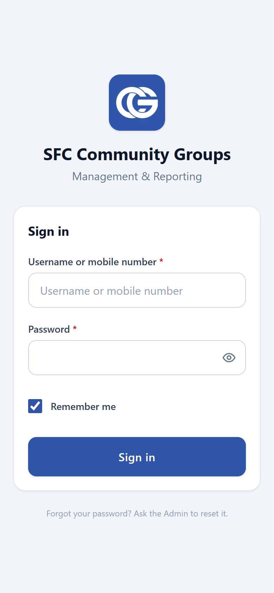
Home shows your group name and three numbers for this month: reports filed, planned fellowships, and money spent. Tap a number to open that list.
Under New Report, tap Fellowship, Follow-up, or Plan Next.
CG Status shows the next fellowship and the last one. Tap a row to open it. If nothing is planned, the next row asks you to plan it.
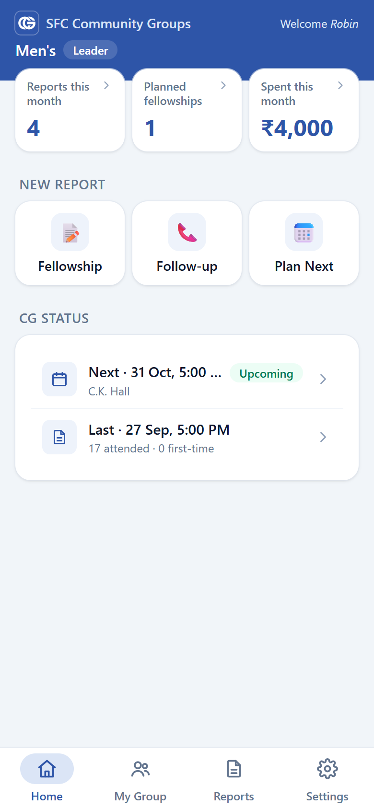
From Home, tap Fellowship. You can also tap Reports, then New Report, then Fellowship Report.
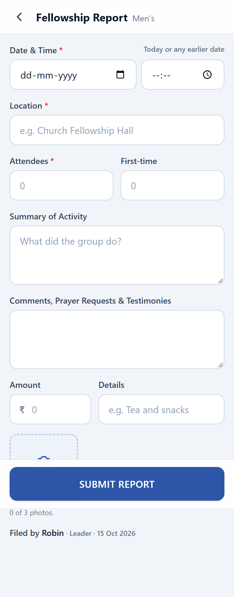
From Home, tap Follow-up.
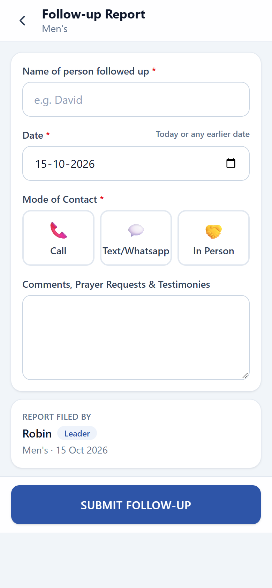
From Home, tap Plan Next.
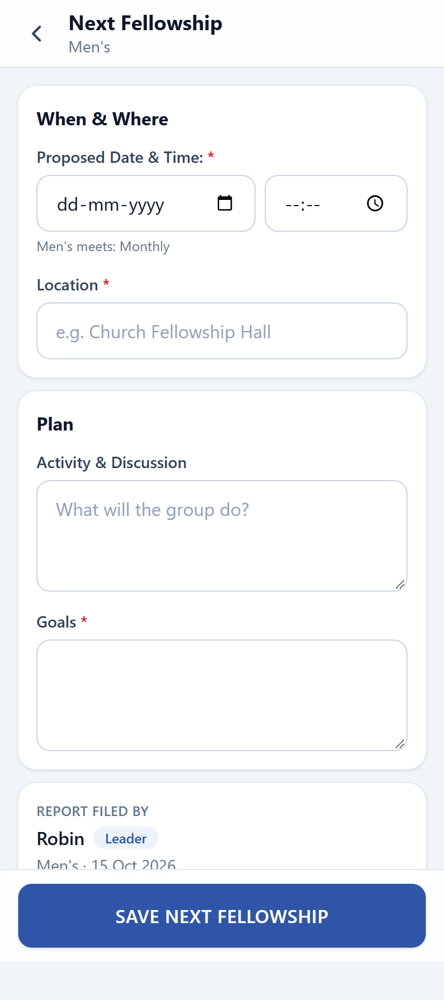
The Reports tab has four cards: Fellowships, Follow-ups, Next Fellowship, and Expenditures. Each card shows a short summary, so you often do not need to open it.
Tap a card to see that list, newest first. Tap any row to open the full report. New Report is at the top right.
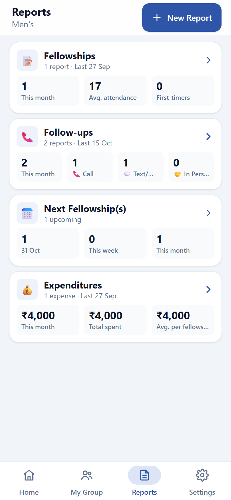
After you tap a card, two icons sit beside the count. The calendar icon opens the month. The other icon returns to the list.
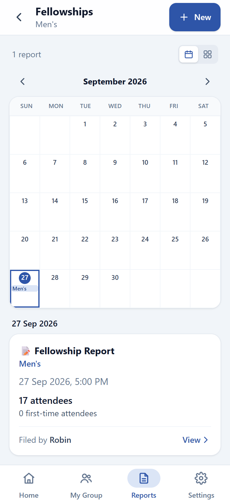
The detail screen shows every field, including who filed it. Tap a photo to open it larger.
The latest fellowship or follow-up has Edit report, so you can correct it. Older ones stay as they were filed.
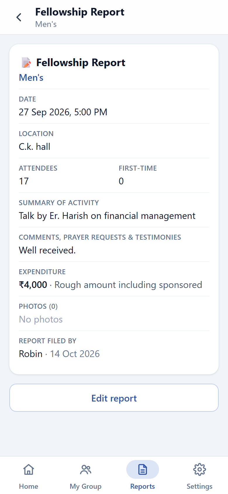
Open an upcoming plan from Home, My Group, or Reports.
Those buttons show only while the plan is still upcoming.
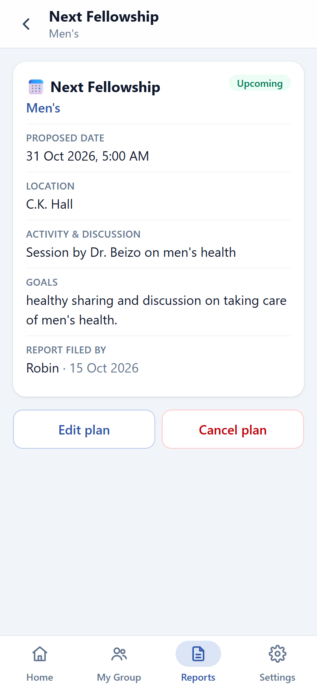
My Group shows the photo, name, how often you meet, the leader, and assistant leaders.
Edit group profile changes the name, category, and photo. The next fellowship card opens that plan. View group reports opens the Reports tab.
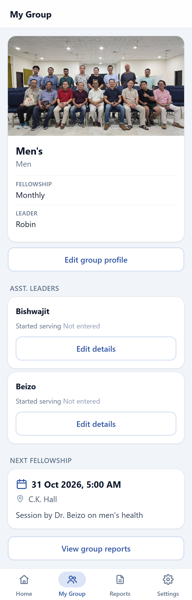
From My Group, tap Edit group profile.
Fellowship frequency is shown, and only the Admin can change it.
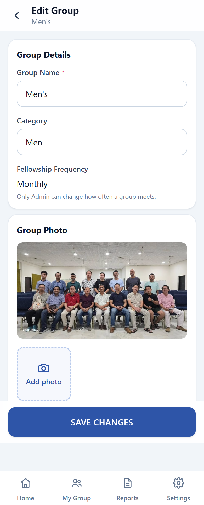
Settings shows who is signed in and your group.
Install app, on Settings or the banner on Home, adds the app to your home screen. On an iPhone, use Share, then Add to Home Screen. On other phones, tap Install app, or use the browser menu. The banner and the row go away once the app is installed.
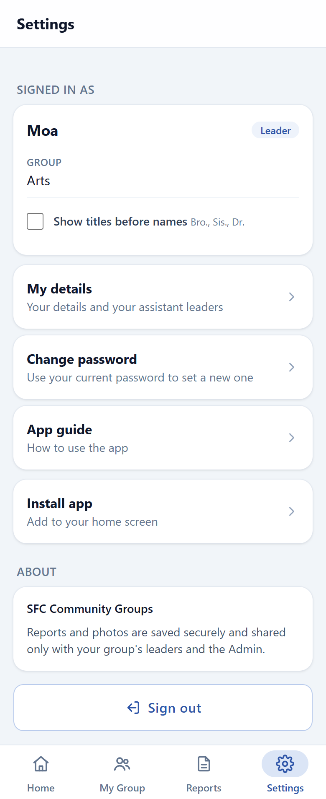
From Settings, tap My details. Update your name, date of birth, email, or when you started serving, then tap Save details.
Assistant leaders are listed under the form. Tap Edit details on a person to update their record.
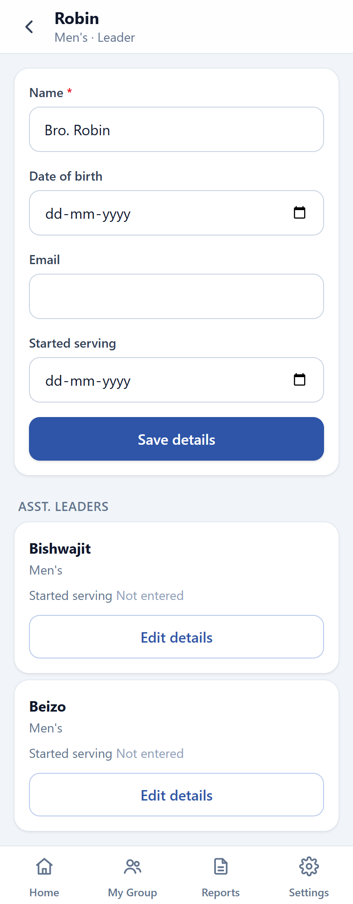
From Settings, tap Change password. Enter your current password, then the new one twice.
A new password needs at least 6 characters, a number, and a special character. The button turns on when the new passwords match and meet that rule.
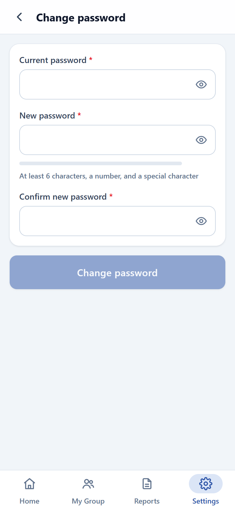